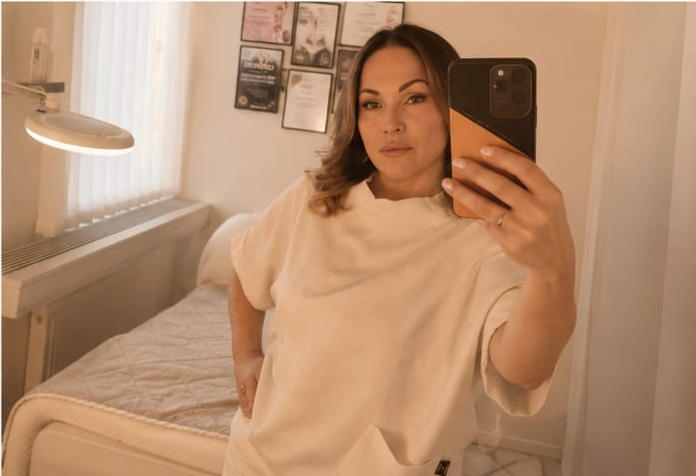
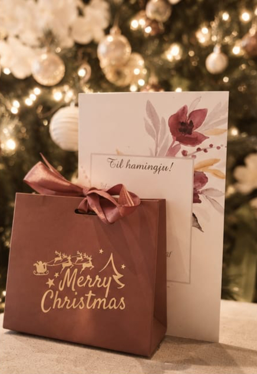
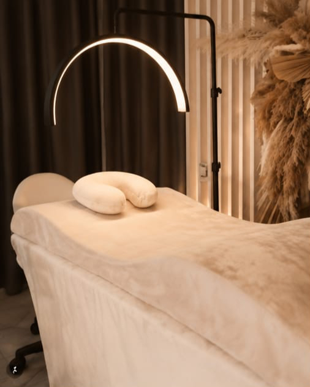
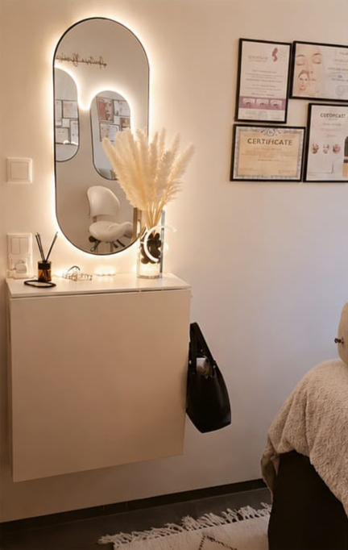
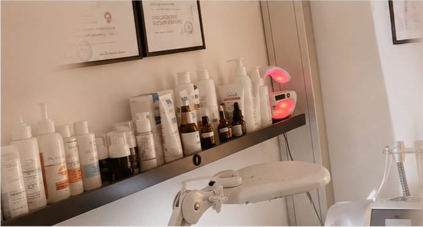
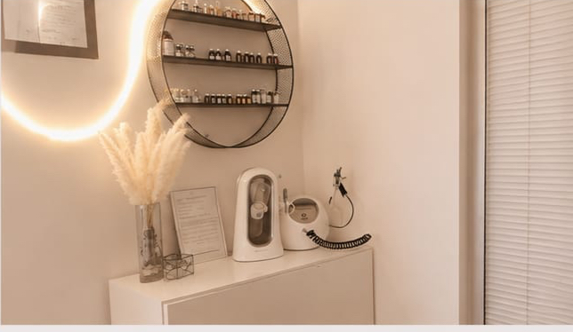
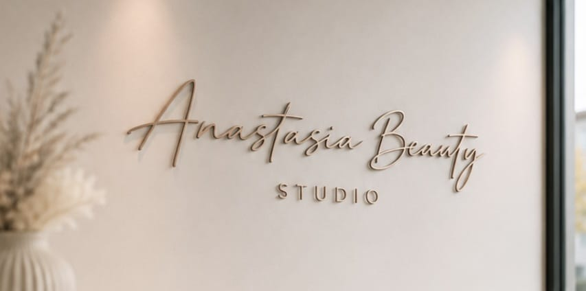
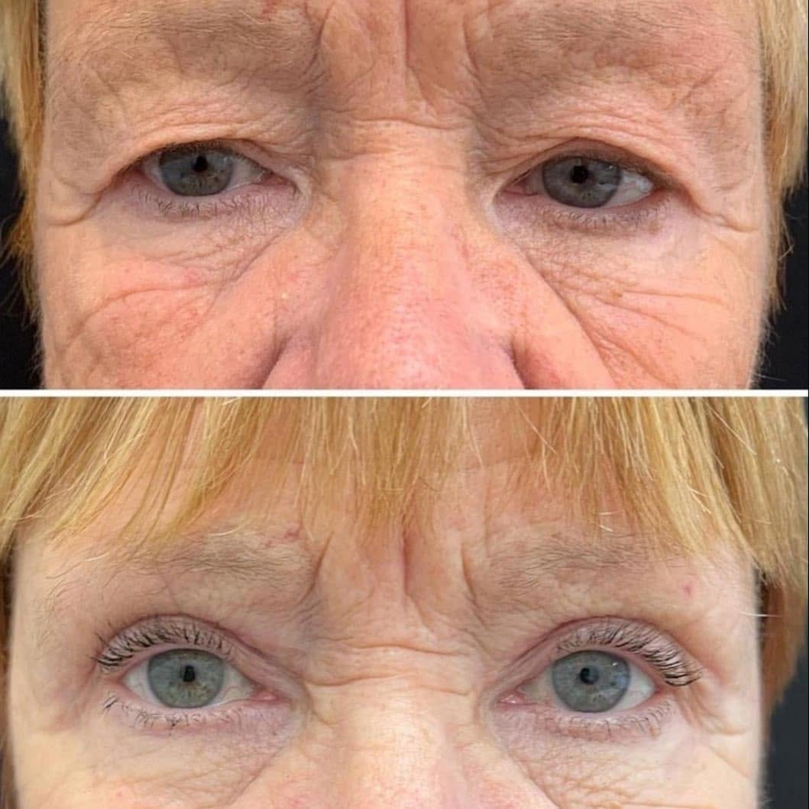
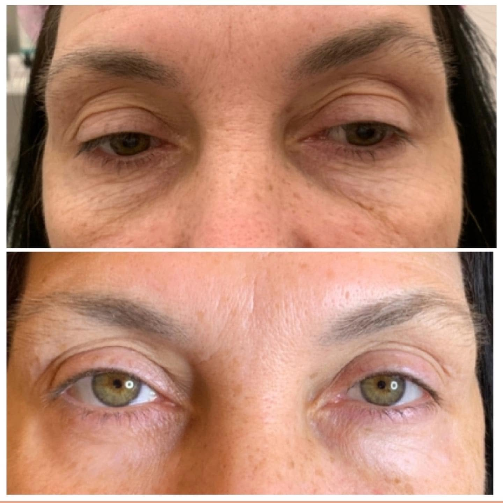
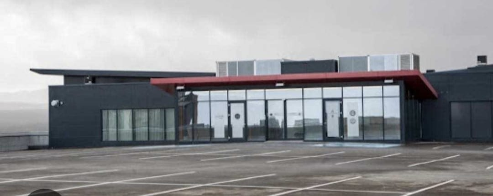

„Mæli svo mikið með! Frábær þjónusta.“
Linda Lentz
Mælir með á Facebook
 Mynd af stofunni
myndir/stofa-hero.jpg
Mynd af stofunni
myndir/stofa-hero.jpg
Snyrti- og húðmeðferðarstofa á höfuðborgarsvæðinu. Hlýlegt umhverfi, vönduð vinnubrögð og tími sem er bara fyrir þig.
Markmið mitt er að draga fram náttúrulega fegurð þína og varðveita þína einstöku eiginleika.

Anastasia Vistaðu sem myndir/anastasia.jpgFagmennska, reynsla og stöðug þróun eru grunnurinn að minni vinnu.
Ég útskrifaðist með láði frá Academy of International Cooperation í Moskvu árið 1997 sem snyrtifræðingur og förðunarfræðingur. Árið 2016 lauk ég jafnframt námi í varanlegri förðun. Frá þeim tíma hef ég lagt mikla áherslu á símenntun með því að sækja fjölmörg sérhæfð námskeið og meistaranámskeið hjá leiðandi sérfræðingum á sviði fagurfræði.
Í dag býð ég upp á fjölbreytt úrval nútímalegra fagurfræðimeðferða sem byggja á áralangri reynslu, faglegri þekkingu og einstaklingsmiðaðri nálgun.
Smelltu á meðferð til að lesa nánar og á Bóka tíma til að velja tíma sem hentar þér.
Verð eru viðmið. Þar sem verðbil er gefið fer endanlegt verð eftir umfangi og er staðfest við bókun.

Gjafabréf
Gjafabréf frá Anastasia Beauty Studio er falleg gjöf við öll tækifæri. Þú velur meðferð eða upphæð og við útbúum fallegt gjafabréf.
Hafa sambandInnlit í stofuna og andrúmsloftið.

myndir/galleri-2.jpg
myndir/galleri-3.jpg
myndir/galleri-4.jpg
myndir/galleri-5.jpg
myndir/galleri-6.jpg myndir/galleri-7.jpg
myndir/galleri-7.jpgDæmi um árangur meðferða þar sem það á við.


Umsagnir frá viðskiptavinum á Facebook.
„Mæli svo mikið með! Frábær þjónusta.“
Linda Lentz
Mælir með á Facebook
„Mæli endalaust með í varir og húðhreinsun. Ekkert smá fallegt og vandlega gert, mjög ánægð!“
Ingibjörg Ósk
Mælir með á Facebook
Svona ratarðu á stofuna.

Bókaðu beint á netinu í gegnum Noona. Ef þú ert ekki viss hvaða meðferð hentar þér er alltaf velkomið að hafa samband.
Sími: +354 782 3232
Netfang: nastasia.pavlova@gmail.com